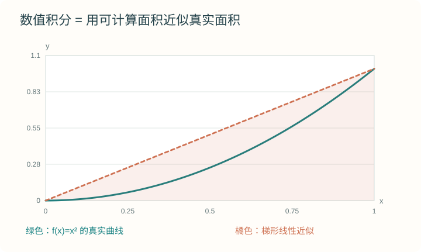
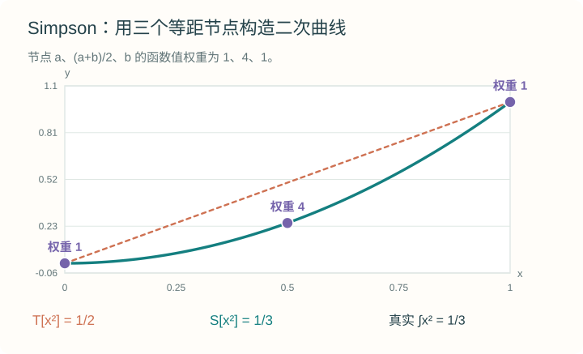

CHAPTER 10 · NUMERICAL ANALYSIS
数值积分：从插值权重到 Simpson 公式
真实面积如何由有限采样计算？用梯形与 Simpson 的几何、代数精度和截断误差，理解插值型求积的假设与适用范围。
01 · 函数面积为什么可以由几个采样点算出来？
真实积分 ∫₀¹x²dx=1/3，但如果只知道端点函数值 f(0)=0 与 f(1)=1，最直接的梯形近似是 1/2，明显高估。多采样一个中点 f(1/2)=1/4，再用通过这三个点的二次多项式近似曲线，就得到与真实积分完全一致的 Simpson 结果。
这揭示了插值型数值积分的本质：不是凭空替换微积分，而是先用容易积分的简单函数近似原函数，再对近似函数积分。不同插值次数和节点安排决定了不同的权重以及误差性质。

02 · 从插值基函数推导求积权重
取区间 [a,b] 上互异节点 x₀,…,xₙ 与 Lagrange 基函数 ℓᵢ(x)。先构造多项式 Pₙ(x)=Σ f(xᵢ)ℓᵢ(x)，再将它积分。结果被写成各个采样值的加权和，其中权重仅依赖节点与积分区间：
插值多项式的次数不超过 n，所以插值型求积至少对所有次数不超过 n 的多项式精确；但由于对称性等特殊抵消，有些规则的代数精度可以更高。代数精度是从常数多项式开始，连续满足的最高次数，而不是找一个偶然被算对的高次函数。
03 · 梯形规则：一次插值，一阶代数精度
只选择两个端点 a、b，插值曲线是端点连线；其积分就是梯形面积：
它对所有常数和一次多项式精确，但对二次函数一般不再精确。在 f 有连续二阶导数的常见前提下，单段误差可写成 ∫f−T=−(b−a)³ f″(ξ)/12，其中 ξ∈(a,b)。这也解释了为什么凸函数 f″>0 时梯形规则通常高估。
04 · Simpson 规则：三点二次插值，却对三次也精确
取三个等距节点 a,(a+b)/2,b，用通过三点的二次多项式取代原曲线并积分，得出 1:4:1 的权重：
虽然用的是二次插值，单段 Simpson 因节点对称而对全部三次多项式也精确，代数精度是 3。在 f 有连续四阶导数时，误差是 ∫f−S=−(b−a)⁵ f⁽⁴⁾(ξ)/2880。如果只给离散样本，要将其用于复合 Simpson，等距节点和偶数个子区间是经典公式的要求。

05 · 逐次测试多项式，找出误差从哪里出现
取区间 [0,1]、函数 f(x)=xᵏ，真实积分为 1/(k+1)。令 k=0,…,4，逐项比较梯形与 Simpson，就能验证代数精度：梯形在 2 次及以上一般出现误差；Simpson 到 3 次仍精确，而对 4 次多项式开始出现偏差。
def trapezoid(f,a,b):
return (b-a)*(f(a)+f(b))/2
def simpson(f,a,b):
mid=(a+b)/2
return (b-a)*(f(a)+4*f(mid)+f(b))/6
for k in range(5):
f=lambda x,degree=k:x**degree
truth=1/(k+1)
t=trapezoid(f,0,1)
s=simpson(f,0,1)
if k<=1: assert abs(t-truth)<1e-12
if k<=3: assert abs(s-truth)<1e-12
if k==4: assert abs(s-truth)>1e-3
print(k,truth,t,s)这类代数精度测试只能验证指定多项式族，不等于对所有实函数的误差保证。对不光滑、强振荡或带端点奇异性的被积函数，误差阶与步长选择需要另外分析。
原始资料与延伸阅读
本节参考以下权威资料，并将文献中的数学结论与本文独立构造的示例严格区分。
- SciPy · scipy.integrate.simpson：采样值上的复合 Simpson 求积及等距条件。
- NIST DLMF §3.5 · Quadrature：插值型求积、代数精度和误差分析。
- SciPy · Integration：梯形、Simpson、固定和自适应求积 API 的区别。